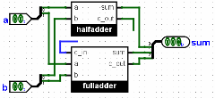

Подстановка библиотек
Теперь предположим, что у нас есть две схемы Logisim, которые должны делать одно и то же. Как у преподавателя, у вас могут быть работы, выполненные учащимися: у вас есть один файл с вашим решением и несколько файлов учащихся, содержащих их работы. Например, задание было построить двухбитный сумматор.
Я представлю, что у нас есть два файла с именами master.circ и query.circ. Каждый файл содержит схему с названием Adder2 (важно, чтобы схема для проверки имела точно такое же название), эти схемы выглядят следующим образом.
Adder2 в master.circ Adder2 в query.circ 

Как вы видите, эталонная схема использует встроенный в Logisim сумматор, а проверяемая схема использует две подсхемы, представляющие собой полусумматор и полный сумматор (которые в свою очередь построены из простых логических элементов). Для целей нашего примера проверяемая схема имеет глупую ошибку: бит переноса из полусумматора не соединён с полным сумматором.
Мы сохраняем нашу проверяющую схему в отдельный файл test.circ. Затем мы загружаем master.circ как библиотеку Logisim (| Проект |→| Загрузить библиотеку |→ | Библиотека Logisim… |), и добавляем двухбитный сумматор оттуда как подсхему. Мы могли бы выполнить эту схему непосредственно, чтобы получить желаемый результат для идеального решения.
java -jar logisim-evolution.jar test.circ -tty table
Но мы хотим выполнить схему, используя как загруженную библиотеку query.circ вместо master.circ. Наивным подходом будет открыть Logisim и загрузить эту библиотеку; или вы можете просто удалить файл master.circ и переименовать query.circ в master.circ вместо него. Но Logisim включает удобный параметр -sub, который временно заменяет один файл другим в ходе этой сессии - без каких-либо изменений на диске.
java-jar logisim-evolution.jar test.circ -tty table -sub master.circ query.circ
Вывод, который вы увидите, показан ниже; он конечно отличается от того, что мы видели в предыдущем разделе, поскольку сейчас выполняется неправильный query.circ.
00 00 0E0 01 00 0E1 10 00 EE0 11 00 EE1 00 01 0E1 01 01 0E0 10 01 EE1 11 01 EE0 00 10 EE0 01 10 EE1 10 10 1E0 11 10 1E1 00 11 EE1 01 11 EE0 10 11 1E1 11 11 1E0
Далее: Другие параметры проверки.